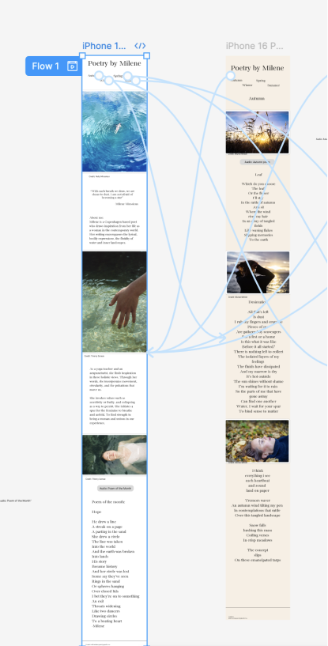

Portfolio Opgave
Tema 3
Grundlæggende UX/UI
Teknologier og Værktøjer
- Brugerhistorier & brugertyper
- Figma
- Tests
Brugerhistorier & brugertyper: Jeg lærte omk. brugertyper og brugerrejser. Her skrev jeg brugerhistorier for at forstå behov og adfærd. Det hjalp mig med at træffe designvalg, som er relevante for rigtige mennesker og konkrete brugssituationer. i min tilfæld var det lidt svært at bruge userstories, idet mit hjememsides mål er at dele min eget kunst.


Figma: Jeg brugte Figma til at udvikle wireframes og interaktive prototyper, frames og komponenter med hover-effekter. Det hjalp mig med at teste layout, farver og funktioner. Prototyper er et vigtigt forstadie til kodning, idet man følger dem nøjagigt.
Her er et eksempel på nogle “interaktive prototyper” jeg lavede i Figma. navigation bar blev til en komponent. å denne måde kunne jeg få en hover og “on-click” effekt frem. Man kan navigere mellem siderne og via navbar. tak været flow effekten.
Tests:Jeg anvendte tests som 5-sekunders test, Lyssna og Google Forms. Gennem brugernes feedback kunne jeg justere elementer for at forbedre den samlede brugeroplevelse. Til sidst brugte jeg Lighthouse-test: Ved hjælp af Lighthouse testede jeg sitets performance. For at sikre hurtig indlæsning og tage hensyn til bæredygtighed konverterede jeg alle billeder til WebP-format

Her er Lighthouse analyseefter at jeg har ændret alle billederne til WebP format. performancen blev god.

Konklusion: Dette tema var personligt og meningsfuldt. Jeg fik lov at kombinere tekniske færdigheder med min egen kreative stemme – og det var både lærerigt og motiverende. Jeg lærte, hvordan brugerfokuseret design skabes gennem research, test og prototyper, og hvordan selv små UI-valg har stor betydning for oplevelsen.